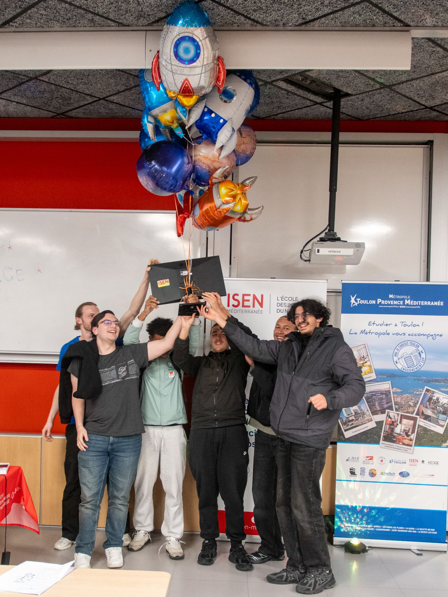

Participation au challenge ActInSpace organisé par le CNES et l'ESA sur le site de l'ISEN. En équipe, nous avons développé la société Orbitalys et son agent G.I.L, et remporté le Prix Coup de Cœur du Jury.
Powerpoint de notre projet

Mon groupe lors de la remise du prix